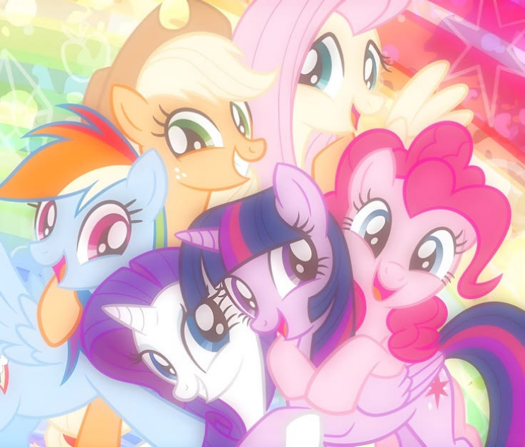

Arquivo histórico • EquestriaTrês fatos sobre as pôneis
A estreia dos brinquedos
A franquia começou originalmete nos anos 80 como uma linha de brinquedos antes de se tornar um grande sucesso na TV.
A magia das Cutie Marks
As marcas no flanco das pôneis representam seus talentos únicos e só aparecem quando descobrem sua vocação.
O controle do clima
Em Equestria, o clima não muda sozinho! Os Pégasos são responsáveis por mover as nuvens e agendar as estações.